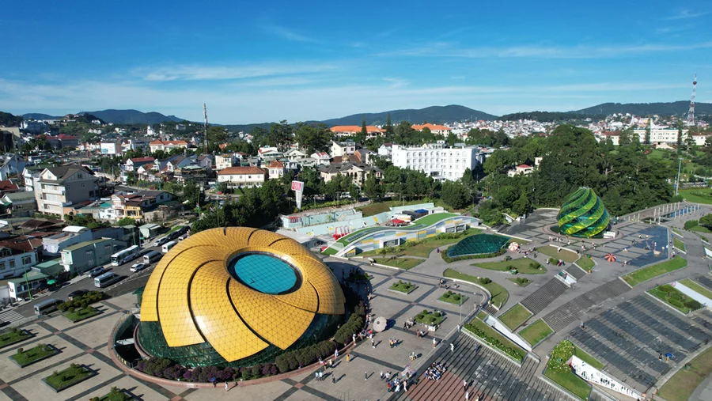
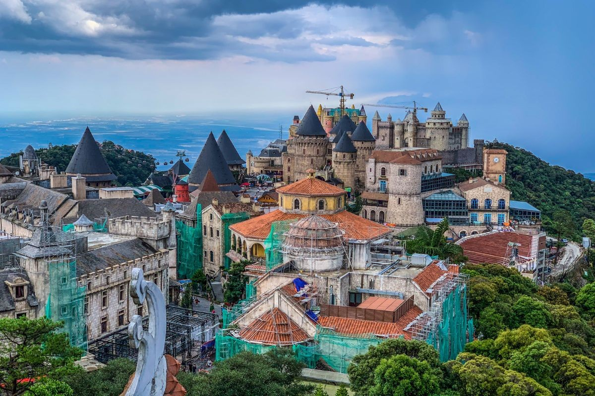
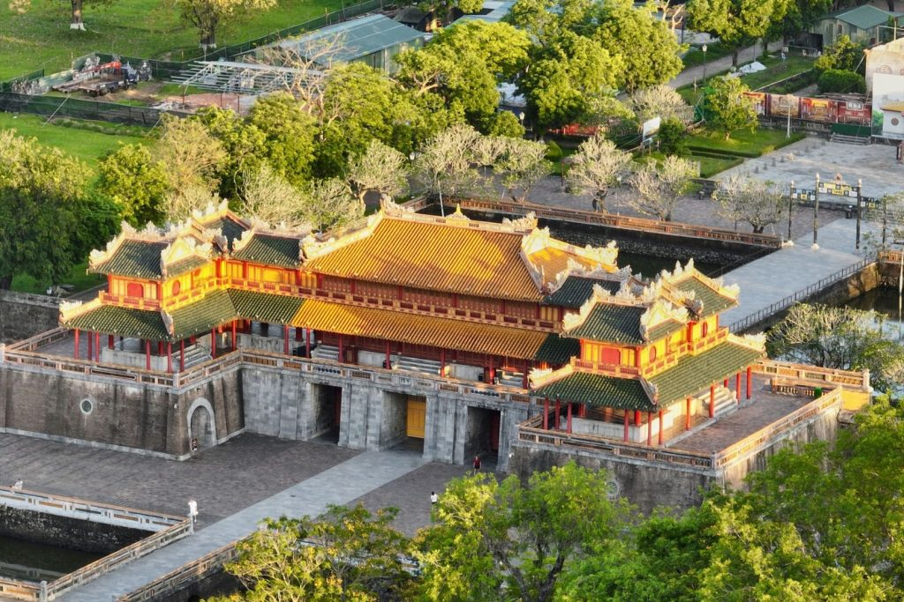
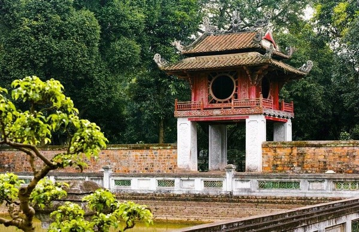

Khám Phá Việt Nam
🏠 Trang chủ
Chụp ảnh
Vui chơi
Văn hoá
Khám phá những trải nghiệm tuyệt vời
Du lịch • Chụp ảnh • Văn hoá
📸 Chụp ảnh đẹp
🎮 Vui chơi
🏛 Văn ho hoá
📸 Địa điểm chụp ảnh nổi tiếng
Phố cổ Hội An
Sa Pa

Đà Lạt
🎮 Nơi vui chơi nổi bật

Bà Nà Hills
VinWonders
🏛 Khám phá văn hoá

Đại Nội Huế

Văn Miếu
×
Xem thêm